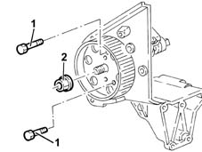
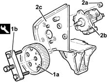

1060E42 supplementary pressure pump - dismantle
- Path
- Procedures > 10 ENGINE UNIT > 1060 DIESEL FUEL INJECTION > 1060E diesel pressure pump > 1060E42 supplementary pressure pump - dismantle
- Kind
- repair procedure (removal / refitting; the operation number is the code)
- Applies to
- engines: 1.9 JTD 8V; all production periods
- Interactive page
- https://sloeber94.github.io/elrnDB-fMltpl/en/#/2892356
Applies to: engines: 1.9 JTD 8V; all production periods
 Dismantling
Dismantling
 Reassembling
ReassemblingPlace the pressure pump mounting in a vice fitted with protective jaws.
1. Stop the rotation of the pressure pump pulley using two bolts.
2. Undo the pressure pump pulley nut.
Undo the two bolts fitted previously to stop the rotation of the pressure pump pulley.

Applies to: engines: 1.9 JTD 8V; all production periods
1. Remove the pressure pump pulley (1a) using the tool (1b).
 | Name | Country |
|---|---|---|
1b | Extractor | 1.860.854.000 |
2. Undo the nuts (2a) and remove the pressure pump (2b) from its mounting (2c).

Applies to: engines: 1.9 JTD 8V; all production periods
Reassembling
DismantlingFit the pressure pump to the mounting and tighten its nuts.
Fit the pressure pump pulley.
Stop the rotation of the pressure pump pulley using two bolts.
Tighten the pressure pump pulley nut to torque.
 | Fastening | Component | Ø | Value (daNm) |
|---|---|---|---|---|
- | Nut | PRESSURE PUMP CONTROL PULLEY | M14 | 4.2 - 5.2 |
Undo the two bolts fitted previously to stop the rotation of the pressure pump pulley.